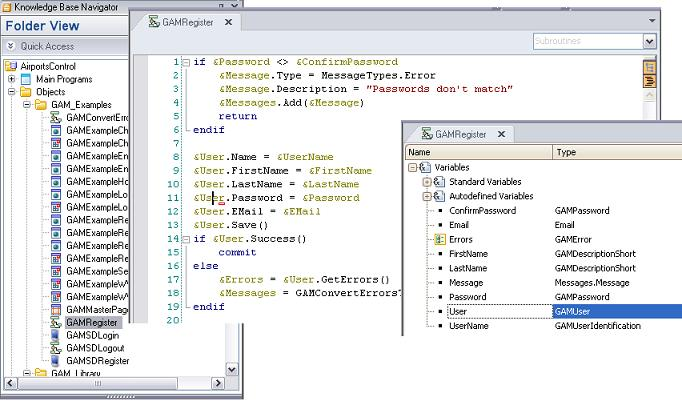

GAM provides an API that allows users to handle data types and methods to add security (Authentication and Authorization) to GeneXus applications (both Web applications and Smart Device applications).
When integrated security is enabled in the KB (Enable Integrated Security property is set to TRUE), external objects are incorporated to allow the user to interact with the GAM API. External objects are the way to access the GAM API. They are distributed in a module, called GeneXusSecurity.
The domains, are distributed in the GeneXusSecurityCommon module.
GAMUser, GAMRepository, GAMPermission, GAMApplication, GAMError are part of the external objects.
As said before, the GAM API provides methods to extend the functionality of security mechanisms. To learn how to use this API, you can read the GAM Examples that offer a wide range of use cases solved. When GeneXus Access Manager is enabled in the KB, you can decide whether to import these examples; see GAM Activation Process for details.

The external objects have properties and methods; in particular, they implement the same methods as Business Component, which are as follows:
- Load()
- Save()
- Delete()
- Fail()
- Success()
If you change any properties in the GAM objects, you need to call the save() method and run the Commit command.
GAM objects also have other methods implemented to create, update or delete objects (see the AddPermission method in the example below). With these methods, the Commit command has to be used after the method is successfully executed. The only GAM methods that execute an implicit Commit are those related to the login, and they run on a new logical unit of work (LWU). See SAC 31253.
If you are going to make changes in both ways (from a property and using a method) and need to cancel both changes - when an error occurs - you need to control it programmatically.
&PermissionAdd.ApplicationId= &AppId
&PermissionAdd.GUID = &Id
&PermissionAdd.Type = &Access
&isOK = &GAMRole.AddPermission(&PermissionAdd, &Errors)
If not &isOK
For &Error in &Errors
Msg(Format(!"%1 (GAM%2)", &Error.Message, &Error.Code))
EndFor
else
commit
Endif
GAM Activation Process
|